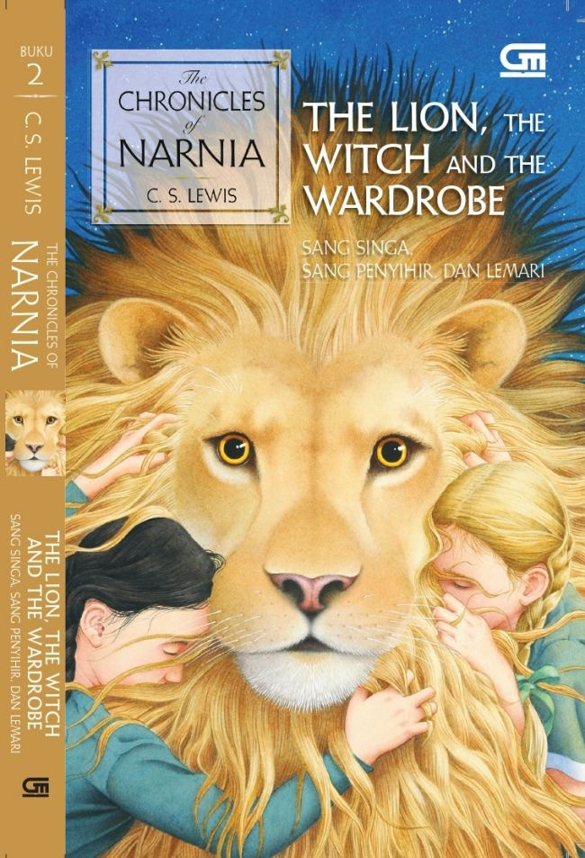

| Home | Best Seller |
|  | Judul : Of Chronicles Of Narnia(The Lion, The Witch, And The Wardrobe) Penulis : C. S. Lewis Tahun : Juni 2022 Jumlah Halaman : 232 halaman Penerbit : Gramedia Pustaka Utama Harga : Rp65.000 |
Sinopsis Novel Of Chronicles Of Narnia(The Lion, The Witch, And The Wardrobe) |
| Dalam buku ini, Pevensie bersaudara yang terdiri dari Peter, Susan, Edmund, dan Lucy,
terpaksa harus diungsikan ke rumah Profesor Digory Kirke akibat situasi perang dunia. Ketika sedang bermain petak
umpet, Lucy tidak sengaja bersembunyi di lemari ajaib yang membawanya ke dunia Narnia. Ketika ia kembali, ia mengajak
kakak-kakaknya untuk masuk ke lemari tersebut dan mengunjungi Narnia. Ternyata, di sana masih ada Penyihir Putih yang bernama Jadis. Ia menjebak Edmund agar bisa membunuh Pevensie bersaudara karena ada ramalan bahwa akan datang dua putra Adam dan dua putri Hawa yang akan mengalahkannya. Peter, Susan, dan Lucy harus meminta bantuan Aslan. Atas bantuan Aslan, Edmund bisa diselamatkan. Namun, Jadis meminta Edmund kembali. Akhirnya, Aslan dan Jadis membuat perjanjian rahasia, di mana Aslan akan menyerahkan diri kepada Jadis. Malam itu pun Aslan dibunuh oleh Jadis di atas meja batu. Kematian Aslan mengharuskan Peter menjadi pemimpin. Lalu, di tengah terjadinya perang, Aslan hidup kembali. Kemudian, ia menyelamatkan orang-orang yang telah disihir menjadi batu oleh Jadis di istananya. Sampai pada akhirnya Aslan berhasil membunuh Jadis dan perang selesai. Peter, Susan, Edmund, dan Lucy diangkat menjadi raja dan ratu di Narnia. Mereka memimpin Narnia sampai mereka tumbuh dewasa. Ketika mereka menemukan jalan kembali ke lemari ajaib dan masuk ke sana, ternyata mereka kembali menjadi anak kecil. Tak ada perubahan waktu yang terjadi. |